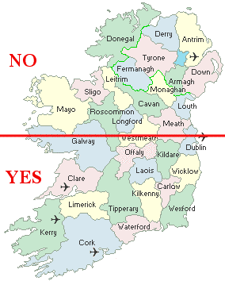

Ireland
I have a friend, Eoin, who is from Ireland and, after some years in the USA working at (his former employer and mine) Apple, currently lives in Dublin. Having valiantly tried to show him a bit of life-in and the-land-of America (though often I was rebuffed), Eoin reciprocated by offering to show me around his island, were I ever in the neighborhood. In May of 2005, I was and he did.
The plan was simple. I come to Ireland with no plan, Eoin informs me he has no plan, and we band together to see the sights, meet the people, eat the food, drink the drinks (all two of them: Guinness and whiskey), and wander the land... without a plan... always, without a plan.
Our travels happened to (again, no plan) end up being confined to the southern half of the island.

See the "YES" area in all of its zoomed-in, detailed, and highlighted-by-my-travels GLORY.